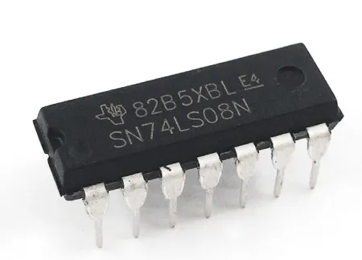

The AND Gate is a fundamental digital logic gate that implements logical conjunction. It acts like a digital switch where the output is only active (HIGH) if all inputs are active simultaneously.
Real-World Applications: Used in security systems (Key + Code required), industrial controls (Safety Button + Start Button), and microprocessor arithmetic logic units (ALU).

TTL Quad 2-Input AND Gate
The 7408 is a standard logic IC containing four independent AND gates. It operates on 5V TTL logic levels.
Both inputs must be HIGH (1) for the output to be HIGH. Currently, one or more inputs are LOW.
| A | B | Y |
|---|---|---|
| 0 | 0 | 0 |
| 0 | 1 | 0 |
| 1 | 0 | 0 |
| 1 | 1 | 1 |
In Boolean algebra, the AND operation is equivalent to multiplication.
0 · 0 = 0
1 · 0 = 0
1 · 1 = 1
No gate switches instantly. Propagation delay is the time required for a change at the input to appear at the output. For the standard 7408, this is typically around 15 nanoseconds.
TTL (Transistor-Transistor Logic): Like the 7408, robust but consumes more power.
CMOS (Complementary MOS): e.g., 74HC08. Lower power consumption, higher impedance.
Scenario: A safety interlock system.
Input A: Guard Door Closed (1)
Input B: Emergency Stop Released (1)
Result (Y): Motor Can Start (1)